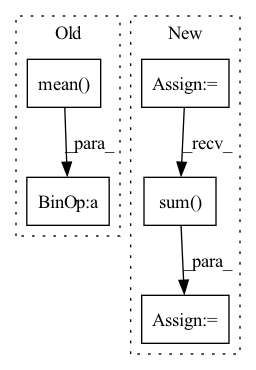

Pattern ID :438
Before Change
// template pos emb
assert t.shape[-2:] == x.shape[-2:]
x = x + t.mean(dim = 1)
// embed extra msa, if present
if exists(extra_msa):After Change
x_point = rearrange(x, "b i j d -> (b i j) () d")
t_point = rearrange(t, "b t i j d -> (b i j) t d")
x_mask_point = rearrange(x_mask, "b i j -> (b i j) ()")
t_mask_point = rearrange(t_mask_crossed, "b t i j -> (b i j) t")
template_pooled = self.template_pointwise_attn(
x_point,
context = t_point,
mask = x_mask_point,
context_mask = t_mask_point
)
template_pooled_mask = rearrange(t_mask_point.sum(dim = -1) > 0, "b -> b () ()")
template_pooled = template_pooled * template_pooled_mask
template_pooled = rearrange(template_pooled, "(b i j) () d -> b i j d", i = n, j = n)
x = x + template_pooled
// embed extra msa, if present
In pattern: SUPERPATTERN
Frequency: 3
Non-data size: 5
Instances Fragment ID: 1608152
Project Name: lucidrains/alphafold2
Commit Name: 79d820847ae54855cebe2e5717ca9214564f1ed9
Time: 2021-07-20
Author: lucidrains@gmail.com
File Name: alphafold2_pytorch/alphafold2.py
M Class Name: Alphafold2
N Class Name: Alphafold2
M Method Name: forward(16)
N Method Name: forward(16)
M Parent Class: nn.Module
N Parent Class: nn.Module
M File Name: alphafold2_pytorch/alphafold2.py
N File Name: alphafold2_pytorch/alphafold2.py
M Start Line: 607
M End Line: 652
N Start Line: 630
N End Line: 677
Before Change
l2QLoss.append(F.mse_loss(latent.detach(), q, reduction="none").mean(axis=(1, 2, 3)))
l1QLoss.append(F.l1_loss(latent.detach(), q, reduction="none").mean(axis=(1, 2, 3)))
l2QLoss.append(0.01 * F.mse_loss(latent, q.detach(), reduction="none").mean(axis=(1, 2, 3)))
l1QLoss.append(0.01 * F.l1_loss(latent, q.detach(), reduction="none").mean(axis=(1, 2, 3)) )
// regs.append(-1e-4 * ((latent ** 2).mean((1, 2, 3)) + (q ** 2).mean((1, 2, 3))))
l1QLoss = sum(l1QLoss)After Change
// N, H, W, K -> N, HW, K
batchWiseLogit = logit.reshape(len(logit), -1, logit.shape[-1])
posterior = OneHotCategorical(logits=batchWiseLogit)
prior = OneHotCategorical(probs=torch.ones_like(batchWiseLogit) / batchWiseLogit.shape[-1])
reg = torch.distributions.kl_divergence(posterior, prior).sum( -1) + compute_penalties(batchWiseLogit, allowed_entropy=0.1, individual_entropy_coeff=1.0, allowed_js=4.0, js_coeff=1.0, cv_coeff=1.0, eps=Consts.Eps)
regs.append(reg)
// reg = reg / diversity
regs = sum(regs) Fragment ID: 1607714
Project Name: xiaosu-zhu/mcquic
Commit Name: 8c71ec66b33adcc34c3c3769caf2b9087dd03ff1
Time: 2021-03-31
Author: xiaosu.zhu@outlook.com
File Name: src/mcqc/losses/structural.py
M Class Name: CompressionLossTwoStage
N Class Name: CompressionLossTwoStage
M Method Name: forward(6)
N Method Name: forward(6)
M Parent Class: nn.Module
N Parent Class: nn.Module
M File Name: src/mcqc/losses/structural.py
N File Name: src/mcqc/losses/structural.py
M Start Line: 130
M End Line: 151
N Start Line: 146
N End Line: 151
Before Change
for latent, q in zip(latents, quantizeds):
l2QLoss.append(F.mse_loss(latent.detach(), q, reduction="none").mean(axis=(1, 2, 3)))
l1QLoss.append(F.l1_loss(latent.detach(), q, reduction="none").mean(axis=(1, 2, 3)))
l2QLoss.append(0.00001 * F.mse_loss(latent, q.detach(), reduction="none").mean(axis=(1, 2, 3)) )
l1QLoss.append(0.00001 * F.l1_loss(latent, q.detach(), reduction="none").mean(axis=(1, 2, 3)))
l1QLoss = sum(l1QLoss)After Change
// summedProb = batchWiseLogit.sum(1)
posterior = OneHotCategorical(logits=batchWiseLogit)
prior = OneHotCategorical(probs=torch.ones_like(batchWiseLogit) / batchWiseLogit.shape[-1])
reg = torch.distributions.kl_divergence(posterior, prior).sum( -1)
reg += compute_penalties(batchWiseLogit, allowed_entropy=0.1, individual_entropy_coeff=cv, allowed_js=4.0, js_coeff=cv, cv_coeff=cv, eps=Consts.Eps)
// reg = reg / diversity
regs.append(reg)
regs = sum(regs) Fragment ID: 1608196
Project Name: xiaosu-zhu/mcquic
Commit Name: 6a7990547d3b9f68e7377cfc03ef1edd64929802
Time: 2021-03-24
Author: xiaosu.zhu@outlook.com
File Name: src/mcqc/losses/structural.py
M Class Name: CompressionLossTwoStage
N Class Name: CompressionLossTwoStage
M Method Name: forward(8)
N Method Name: forward(8)
M Parent Class: nn.Module
N Parent Class: nn.Module
M File Name: src/mcqc/losses/structural.py
N File Name: src/mcqc/losses/structural.py
M Start Line: 53
M End Line: 90
N Start Line: 69
N End Line: 90